検定の基本的な考え方
(Press ? for help, n and p for next and previous slide)
村田 昇
以下の式で計算される
\begin{equation} P(\text{表の回数}=k) = \left(20\atop k\right) 0.5^{k} (1-0.5)^{20-k} \end{equation}
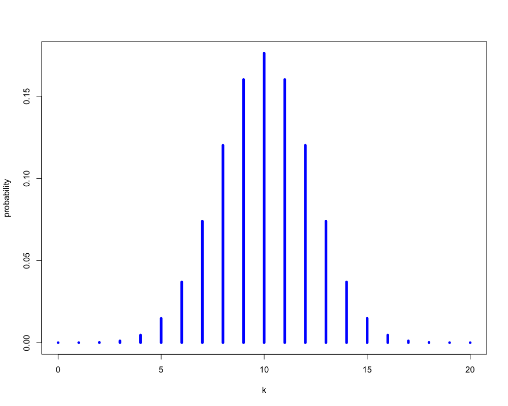
Figure 1: いかさまのないコインの場合
以下の式で計算される
\begin{equation} P(\text{表の回数}=k) = \left(20\atop k\right) 0.6^{k} (1-0.6)^{20-k} \end{equation}
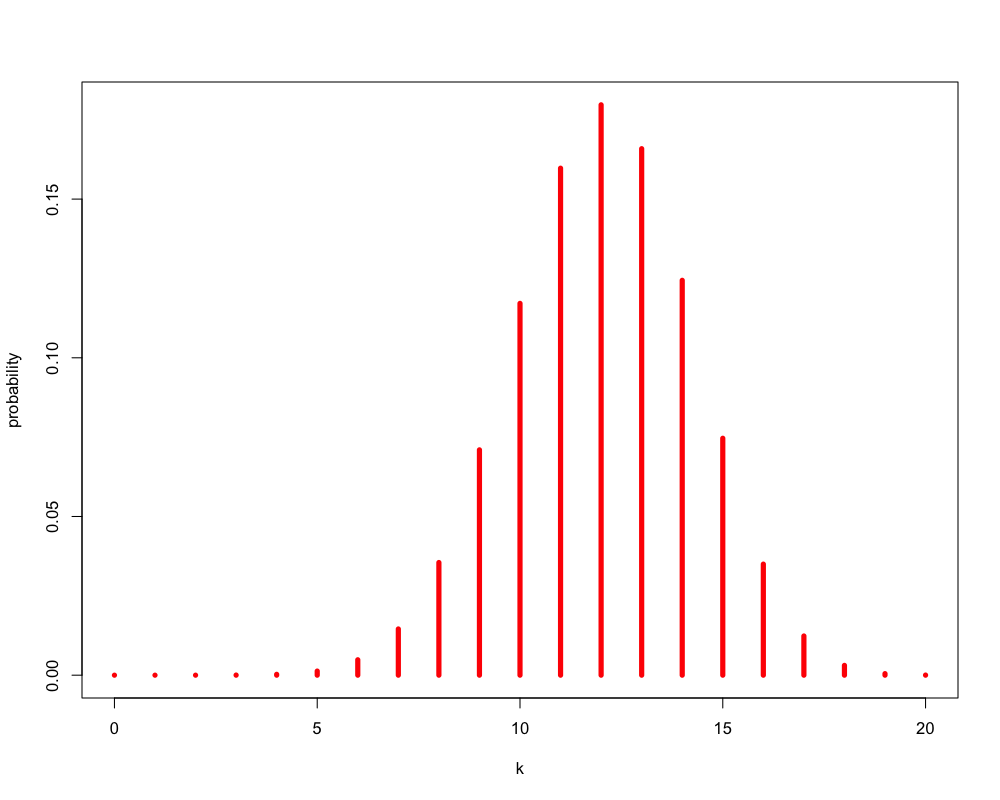
Figure 2: いかさまのあるコインの場合
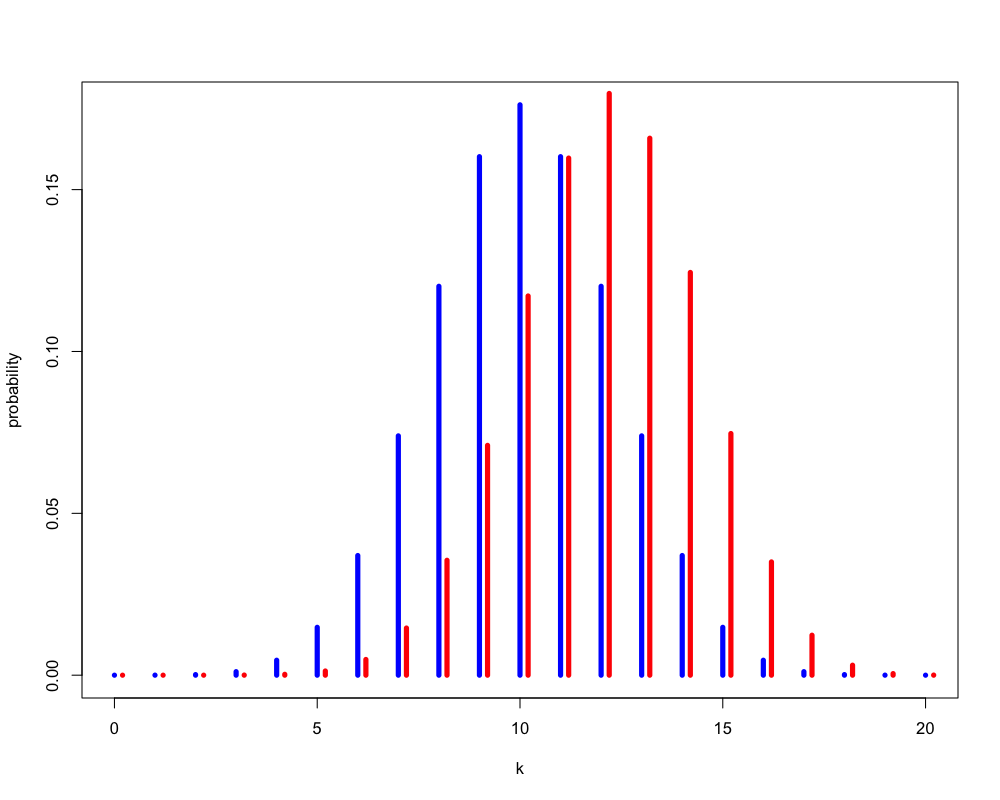
Figure 1: いかさまの有無による違い
以下の式で計算される
\begin{equation} P(\text{表の回数}\ge 15) = \sum_{k=15}^{20}\left(20\atop k\right) 0.5^{k} (1-0.5)^{20-k} = 0.02 \end{equation}
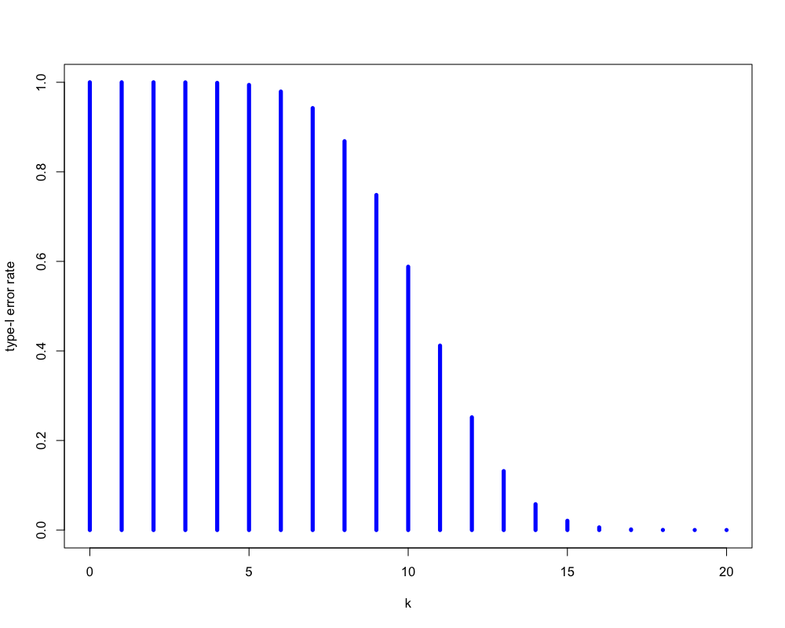
Figure 1: いかさまのないコインの場合
以下の式で計算される
\begin{equation} P(\text{表の回数}\ge 15) = \sum_{k=15}^{20}\left(20\atop k\right) 0.6^{k} (1-0.6)^{20-k} = 0.13 \end{equation}
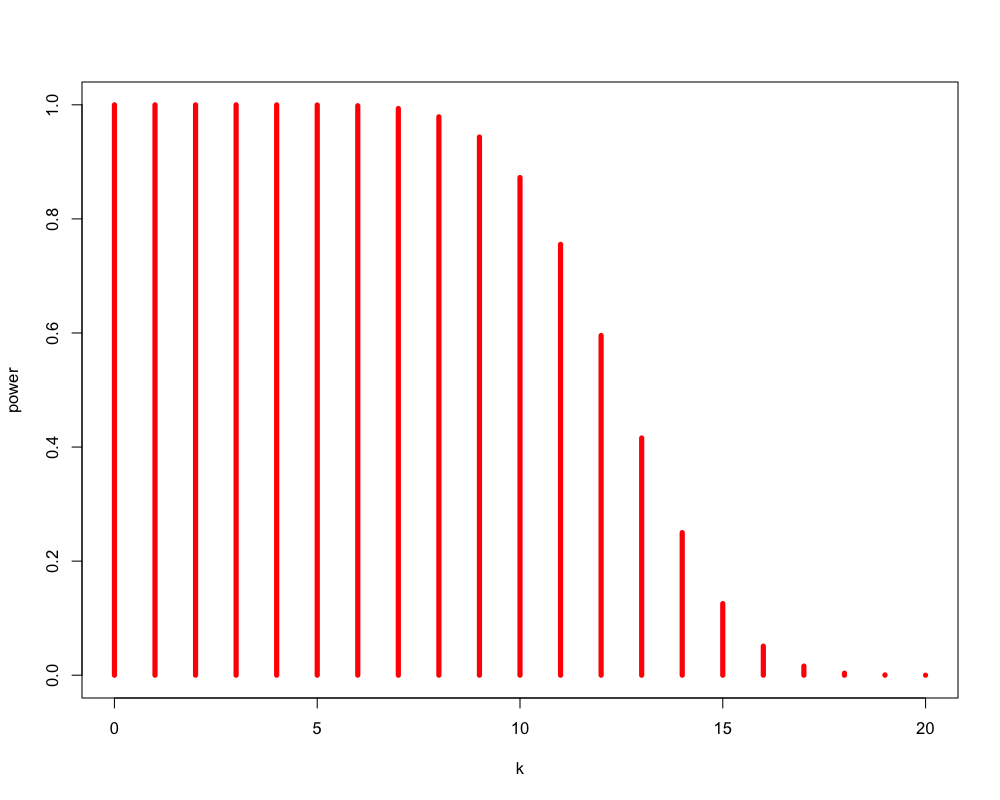
Figure 1: いかさまのあるコインの場合
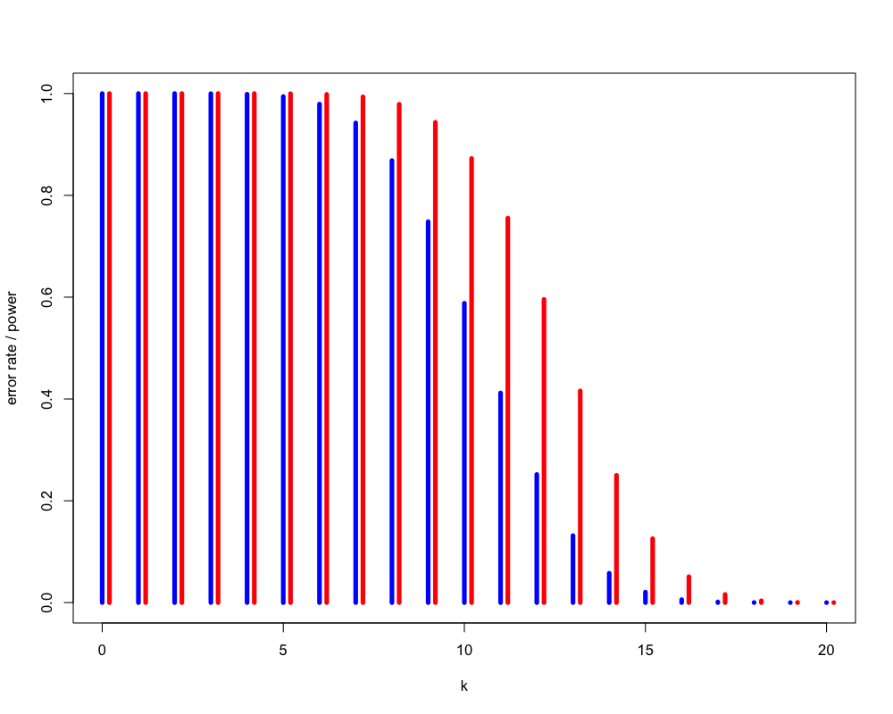
Figure 1: いかさまの有無による違い
以下の式で計算される
\begin{equation} P(\text{表の回数}\ge 15) = \sum_{k=15}^{20}\left(20\atop k\right) 0.9^{k} (1-0.9)^{20-k} = 0.98 \end{equation}
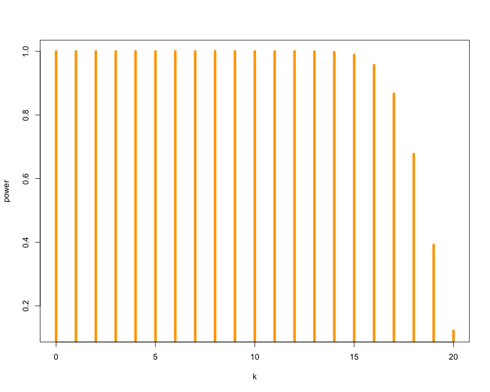
Figure 1: いかさまのあるコインの場合
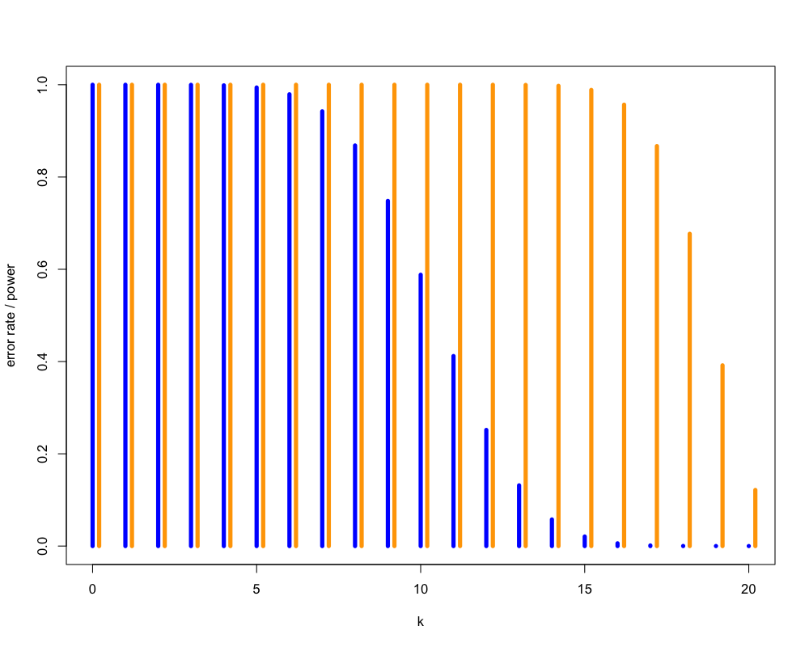
Figure 1: いかさまの有無による違い
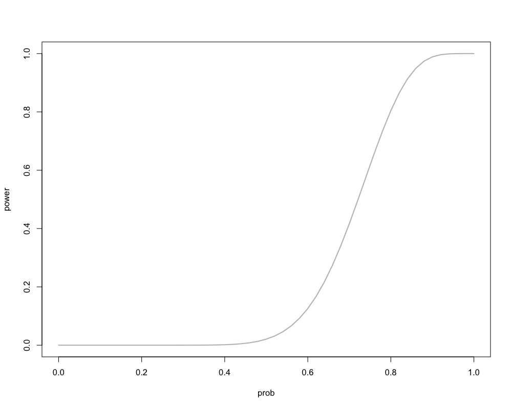
Figure 1: 対立仮説による検出力の違い (15回以上をいかさまとする場合)
以下の式で計算される
\begin{equation} P(\text{表の回数}\ge 60) = \sum_{k=60}^{100}\left(100\atop k\right) 0.5^{k} (1-0.5)^{100-k} = 0.028 \end{equation}
以下の式で計算される
\begin{equation} P(\text{表の回数}\ge 60) = \sum_{k=60}^{100}\left(100\atop k\right) 0.6^{k} (1-0.6)^{100-k} = 0.543 \end{equation}
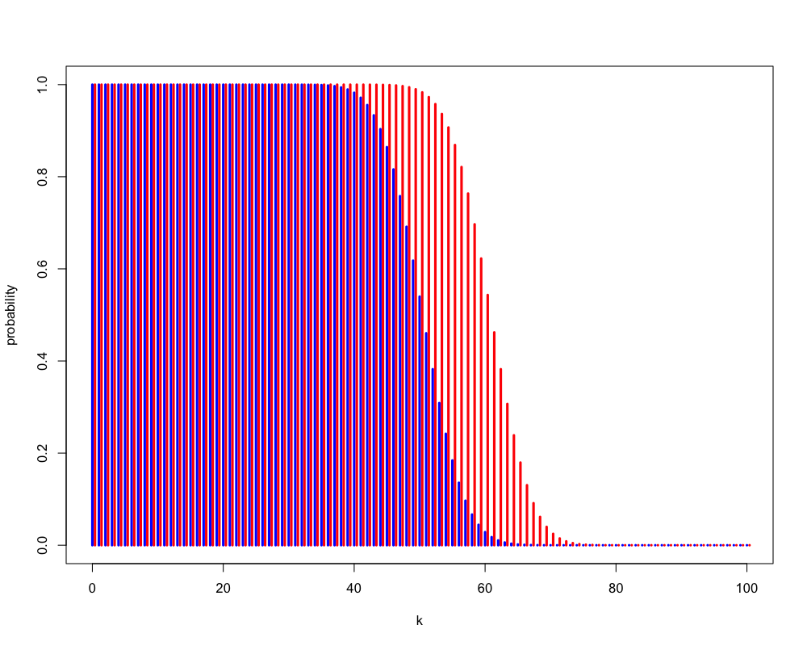
Figure 1: いかさまの有無による違い
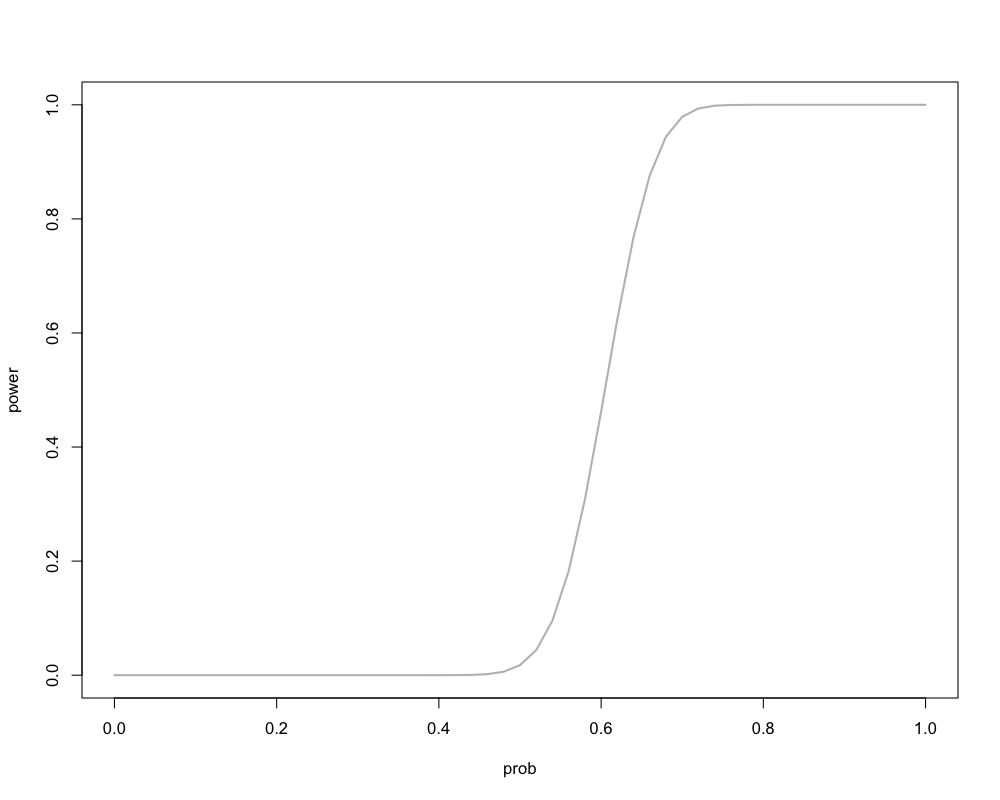
Figure 1: 対立仮説による検出力の違い (15回以上をいかさまとする場合)
おおざっぱにいうと， p値とは特定の統計モデルのもとで， データの統計的要約 (たとえば，2グループ比較での標本平均の差) が観察された値と等しいか，それよりも極端な値をとる確率である．
その1
p値はデータと特定の統計モデルが矛盾する程度をしめす指標のひとつである
その2
p値は，調べている仮説が正しい確率や，データが偶然のみで得られた確率を測るものではない
その3
科学的な結論や，ビジネス，政策における決定は，p値がある値を超えたかどうかにのみ基づくべきではない
その4
適正な推測のためには，すべてを報告する透明性が必要である
その5
p値や統計的有意性は，効果の大きさや結果の重要性を意味しない
その6
p値は，それだけでは統計モデルや仮説に関するエビデンスの，よい指標とはならない